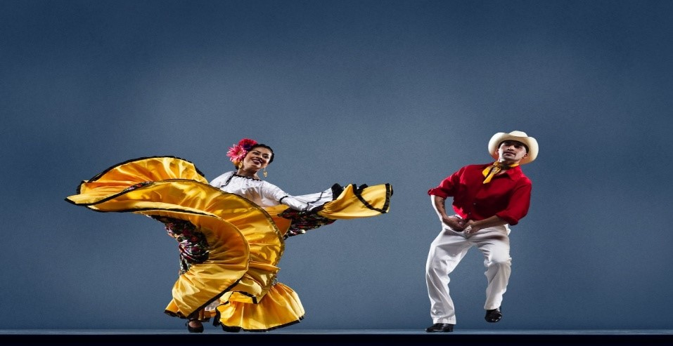
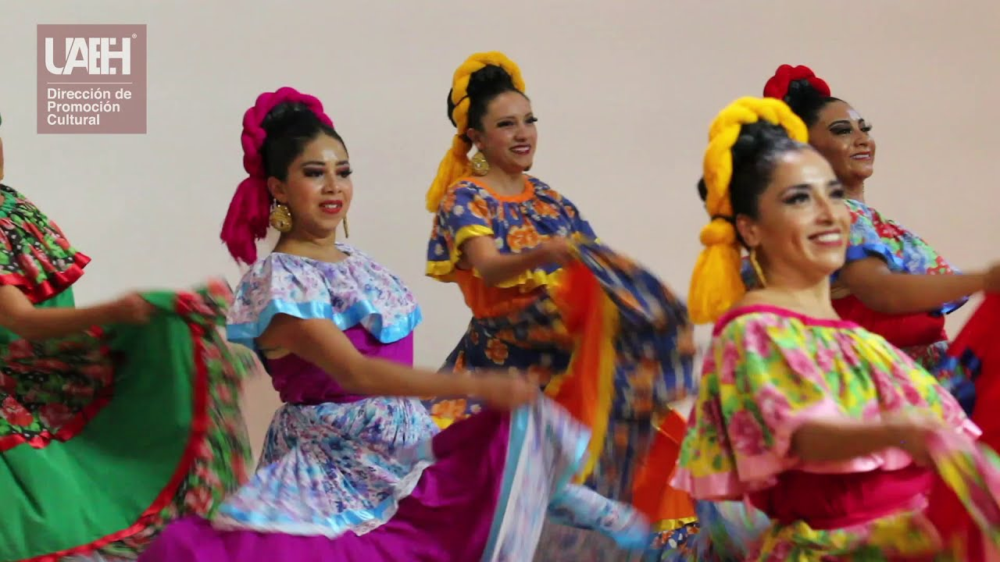

SINALOA!!, DANZA DE LOS PASCOLAS, En la danza de los pascolas, estos cubren sus rostros y golpean rítmicamente
una sonaja, imitando algún elemento del entorno natural de los venados.
Esta danza es popular entre los mayos y permite el intercambio social entre ellos al reunirse para las
celebraciones.
A través de estos bailes se brinda la posibilidad de que personas externas al pueblo mayo se integren a la cultura
indígena.

El Toro Mambo
tiene su origen en la historia de un toro místico que bailaba el mambo con una falda roja. Los artistas se
inspiraron en imitar al toro de esta historia, creando así uno de los bailes sinaloenses más populares.
El sauce y La Palma
simboliza el romance entre dos enamorados, tradicionalmente se utilizan cables para representar “el sauce”, y los
siguientes para representar “la palma”. El Toro Mambo tiene su origen en la historia de un toro místico que
bailaba el mambo con una falda roja.

Pato asado
De la costa de sinaloa, baile con tintes carnavalescos, una propuesta donde se representa la alegria del
sinaloense costeño de mazatlan. Es un baile apòcrifo, una melodia de apenas unos años, la cual gusto para llevarla
a escena y formar parte del folclor apòcrifo de sinaloa.
BAILE
VIDEO
ÉPOCA DEL AÑO
Los pascolas
Este baile es típico de la región de Sonora, México. Las pascolas suelen realizarse durante las festividades
de Semana Santa, que generalmente ocurren entre marzo y abril.
El toro mambo
Esta danza es popular en la región de Sinaloa, México. A menudo se realiza durante las celebraciones de
carnaval, que generalmente tienen lugar antes de la Cuaresma, en febrero o principios de marzo.
El sauce y La Palma
Esta danza es originaria del estado de Nuevo León, México. Suele realizarse durante las festividades de la
Virgen de Guadalupe, que tienen lugar el 12 de diciembre, aunque también puede presentarse en otras
celebraciones religiosas y eventos culturales locales.
Pato asado
Este baile es popular en la región de Chihuahua, México. Se presenta comúnmente durante las festividades de
la Virgen de Guadalupe, así como en otras celebraciones locales que pueden ocurrir en diferentes momentos del
año.